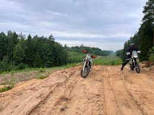
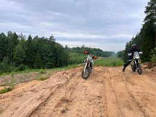
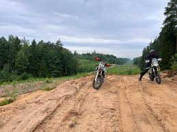

Panuojama kelione TET tiek Lietuva ir Latvija tai 4-5 nakvynių kelionė. Kadangi pirmas mūsų TET, tai šiek tiek perdarytas, kad būtų galima ir pailsėti gerais keliais – bet bus daug miško ir iššūkių, nepergyvenkit.
Čia mūsų TET kelionės puslapis – rasite kiekvienos dienos maršrutą ir GPX failus. Juos atsisiųskite ir naudokite kelionėje su viena iš šių programėlių:
Būtų labai gerai, kad visi atsisiųstumėt GPX failus – bus daug paprasčiau važiuoti visiems tiek jums, tiek man, kai galėsim kartu naviguoti ir padėti vienas kitam. Ir nepamirškit – šita kelionė nėra solo pasirodymas. Aš nesu kelionės vedlys – visi kartu žiūrim į maršrutą, kartu sprendžiam kur sukti, kur važiuoti. Padėkit vieni kitiems, ypač kai važiuosim per miškingas vietas ar neaiškius ruožus.
Jei kur bus per sunku pravažiuoti, arba pamatysim ženklą ar užtvarą – nieko tokio, apsisuksim ir važiuosim kitu keliu.
Tai mūsų su Dariumi sugalvotas Ryterna Pažintinio Ralio komandos pavadinimas. „Axis Motors“ kilo iš Antrojo pasaulinio karo „Ašies“ (Axis) šalių – Vokietijos, Italijos ir Japonijos – pavadinimo. Mūsų komanda važinėja tik su šių šalių motociklais 😄.

Padangos turėtų būti bent 50/50 tipo – tiks tiek asfaltui, tiek bekelėms. Turėkit padangų remonto rinkinį ir įrankius pagal savo motociklą.
Nakvosim palapinėse, maistą gaminsimės ant dujinės stovyklavimo viryklės – o jei bus galimybė, kur ir su malkom. Tualetinio popieriaus irgi nepamirškit 😄